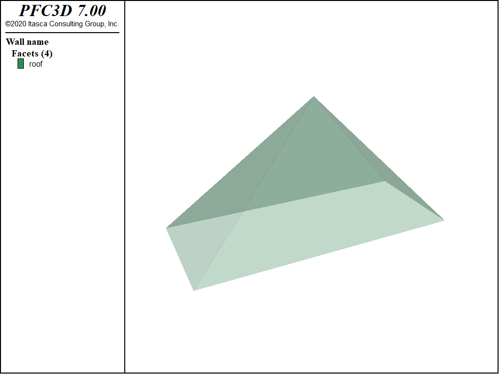

wall create 命令
语法
- wall create keyword ...
-
由顶点创建墙。顶点位置的数量必须为{二维中 2；三维中 3}的倍数，且必须表示{二维中顶点连接表面；三维中边连接表面}，该表面必须是流形且可定向的。顶点可按任意顺序输入，只要每组{二维中 2 个；三维中 3 个}顶点表示一个面片。若缺少 id 关键字，则赋予下一个可用 ID。若缺少 name 关键字，则名称设置为 墙体 xx 分量（wallXX），其中 XX 向（XX） 为墙 ID，前提是该名称先前未被指定。
注意
- 在创建墙体之前必须先指定模型域。
- 所有面片都必须落在模型域内。
- 在循环计算期间，只能在循环点 0 之前创建墙（即在计算时步时）。
- group
为所创建的墙或其组成面片，在槽位 槽位（slot） 处赋予分组名称 s。 若未指定 slot 关键字，则将分组名称赋予槽位 默认（Default）。 可选的 facet 关键字指定将分组赋予面片而非墙。
- id ID 标识（id ）
墙体 ID。若未指定，则使用下一个可用的 ID。
- name s
墙名称。若未指定，则名称设置为 墙体 xx 分量（wallXX），其中 XX 向（XX） 为 ID。
- vertices 顶点 1（vert1 ）...
顶点位置列表。vertex 关键字给出一次，后跟顶点列表。面片顶点按输入顺序取用（例如，前{二维中 2 个；三维中 3 个}矢量位置构成一个面片，接下来的{二维中 2 个；三维中 3 个}顶点位置构成另一个面片。
用法示例
wall create 命令可用于生成单个三角形面片。通过逐个输入顶点来生成所需形状的墙时，该命令很有用。请注意，若要生成三维或二维标准形状的墙单元（盒体、球体、平面、圆盘等），建议使用 wall generate 命令。
要创建三角形面片，必须定义其顶点的位置。
model new
domain extent -0.25 0.25
wall create ...
vertices ...
-0.25 0.0 0.0 ...
0.25 0.0 0.0 ...
0.0 0.0 0.25
此外，可为单个面片或一组面片赋予分组名称。以下是创建名为“roof”的面片组的示例。
model new
model domain extent -10 10
[center = 0.0]
[x = array.create(1,2)]
[y = array.create(1,2)]
[z = array.create(1,2)]
fish def vertices
x(1,1) = -5.0
x(1,2) = 5.0
y(1,1) = -2.0
y(1,2) = 2.0
z(1,1) = -5.0
z(1,2) = 5.0
end
[vertices]
wall create ...
name 'roof' ...
vertices ...
[center] [center] [center] ...
[x(1,1)] [y(1,1)] [z(1,1)] ...
[x(1,2)] [y(1,1)] [z(1,1)] ...
[center] [center] [center] ...
[x(1,1)] [y(1,1)] [z(1,1)] ...
[x(1,1)] [y(1,2)] [z(1,1)] ...
[center] [center] [center] ...
[x(1,2)] [y(1,1)] [z(1,1)] ...
[x(1,2)] [y(1,2)] [z(1,1)] ...
[center] [center] [center] ...
[x(1,1)] [y(1,2)] [z(1,1)] ...
[x(1,2)] [y(1,2)] [z(1,1)]


图 1：使用 wall create 命令由三角形面片组成的墙。
| 这些内容对您有帮助吗？… | FLAC3D © 2019, Itasca | 原文更新于 2020 年 10 月 8 日 |